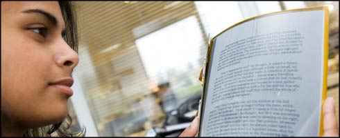

La prensa digital

|  |
Imaginate leyendo el periódico de la mañana y luego usando la misma hoja "de papel virtual" para leer la última novela de su autor favorito. Esta es una de las posibilidades del periódico electrónico, una pantalla flexible que se parece mucho a un periódico pero puede ser usado a diario. La pantalla contiene millones de microcapsulas que transportan cargas eléctricas adheridas por una fina hoja metálica acerada. Cada microcapsula tiene partículas blancas y negras que son asociadas con cargas positivas o negativas. De acuerdo a que carga es aplicada, las partículas blancas y negras salen a la superficie exhibiendo diferentes patrones. Solo en los Estados Unidos más que 55 millones de periódicos son vendidos cada día laborable.